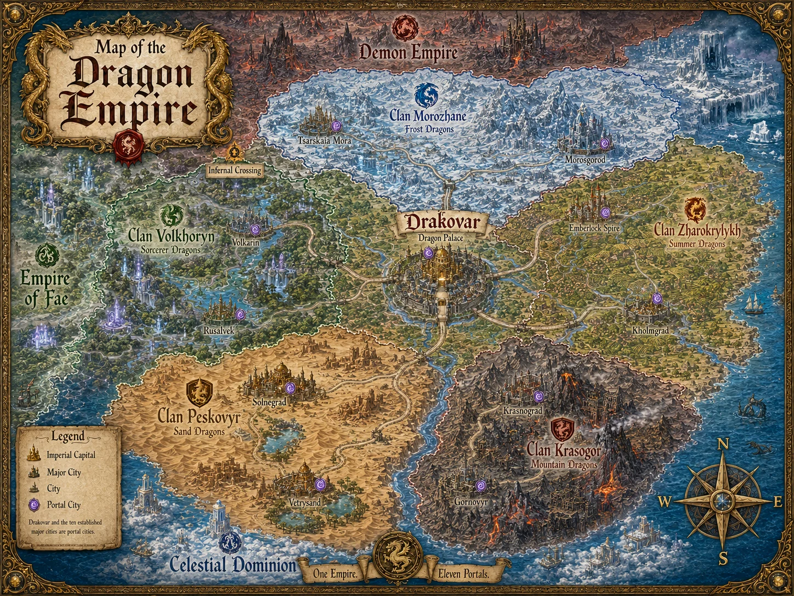
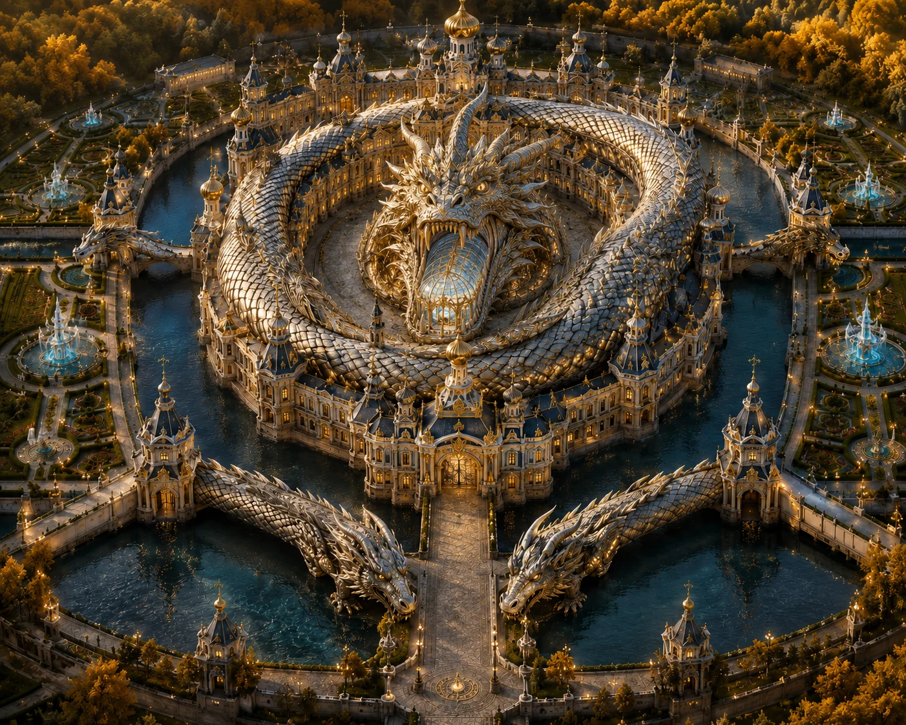

DRAGON EMPIRE · FULL SPOILERS
DRAGON EMPIRE
A Traveller’s Guide to Fairyland.
Open each section to explore the complete geography, politics, peoples, cities and customs recorded in Louisa Webb’s world guide.
← Return to Political Realms
General Geography
The Dragon Empire lies east of the Fae Empire and southeast of the Demon Empire. It is a vast and geographically extreme realm whose landscapes are closely associated with the five great Dragon Clans. Travellers can move from burning deserts and sun-scorched canyons to lush vineyard country, magically saturated valleys, arctic mountains and volcanic ranges without ever leaving the Empire. Clan territory is more than an administrative division: landscape, elemental affinity, architecture, industry and local culture have developed together over centuries.
Unlike the comparatively centralised Demon Empire, the Dragon Empire is best understood as an imperial clan civilisation. The Emperor rules the whole, but the great clans retain enormous regional, cultural, military and political authority. Five major clans dominate imperial politics:
Clan Peskovyr, the Sand Dragons
Clan Zharokrylykh, the Summer Dragons
Clan Volkhoryn, the Sorcerer Dragons
Clan Morozhane, the Frost Dragons
Clan Krasogor, the Mountain Dragons
Each clan is responsible for large territories and important cities, and each possesses its own traditions, magical specialities and economic strengths.
Government of the Dragon Empire
The Dragon Empire is ruled by the Dragon Emperor, currently Drago Nikolai Dragovich, whose full traditional titles includes Father to all Bound and Unbound Clans, First Flame-Claw, Last Scion of the World-Serpent Line, Protector of the Ancestral Flame and the Dragonheart Seal, and Last Defender of Peaks and Hearths.
The Emperor does not govern alone. Dragon politics revolves around two advisory chambers, both of which participate in shaping imperial policy.
The First Chamber: The Clan Heads
The heads of the five great clans form the First Chamber. They represent the territorial, economical, military and political interests of their clans and advise the Emperor.
One of them serves as Premier of the First Chamber. Currently this position is held by Drago's great-aunt as holding that position.
Clan Heads are:
High Matriarch Yelena Peskovyra also in the Circle of Eight
Clan: Peskovyr (Sand Dragons)
Gender: Female
Vibe: Golden-eyed, sand-sculpted beauty with a temper like shifting dunes; strategist of desert warfare.
Grand Duke Mikhail Volkhoryn
Clan: Volkhoryn (ancient Sorcerers)
Gender: Male
Vibe: Ancient scholar-warrior; carries runes carved directly into his scales; rumored to see possible futures.
Lady Serafima Morozhane also in the Circle of Eight
Clan: Morozhane (Frost)
Gender: Female
Vibe: Frost incarnate; serene, pale, with a voice that can calm blizzards or summon them.
Warlord Oleg Krasogor
Clan: Krasogor (noble red mountain)
Gender: Male
Vibe: Mountain of a dragon with molten-red eyes, known for roaring laughter and devastating combat discipline.
Arch-Dracona Vasilisa Zharokrylykhóva
Clan: Zharokrylykh (Summer)
Gender: Female
Vibe: Regal, sharp-featured, silver-scaled; keeper of ancestral summer magic and guardian of old dragon laws.
The Second Chamber: The Circle of Eight
The Circle of Eight is the Empire's magical chamber, composed of eight of the most powerful Dragon wizards and sorcerers in the realm. It advises the Emperor alongside the Clan Heads and has substantial influence over magical policy, wards, artefacts, arcane law and matters where raw magical power becomes a national concern. It governs the magical aspects of the Dragon empire. Only being overruled by the Emperor himself. The Circle is led by the First Dragon Wizard, Grand Magister Kasimir Luthien.
Membership can overlap. Yelena Peskovyra, for example, sits both as a Clan Head in the First Chamber and as a member of the Circle in the Second, giving her a vote in each.
The Circle includes specialists in astral magic, prophecy, sandstorms, mirages, cryomancy, preservation, firestorms and volcanic wards. In other words, if you accidentally start a magical catastrophe in the Dragon Empire, there is a good chance the committee sent to investigate it contains someone capable of causing a larger one.
Members are:
Grand Magister Kasimir Luthien
Clan: Volkhoryn
Title: First Dragon Wizard, Leader of the Circle
“My father,” Serena said with a fond huff. “Brilliant. Terrifying. Leaves books everywhere. Commands enough arcane power to light the sky on fire.”
“Also,” she added, “his colleagues adore him and want to strangle him in equal measure.”
Faelorin Starcrest
Clan: Volkhoryn
Specialty: Astral magic, prophecy weaving
“Kasimir’s closest ally,” Serena explained. “He’s quiet, brilliant, and sees too much. Rumor says he once saw four possible timelines and fainted from disgust.”
High Matriarch Yelena Peskovyra also Clan Head
Clan: Peskovyr (Sand Dragons)
Specialty: Sandstorm sorcery, desert geomancy
“She’s one of the two Circle members from the Sand Dragons,” Serena continued. “Diplomatic, strategic, and will smile while she turns you into a dune.”
“Comforting.”
“She likes beauty,” Serena offered. “And stubborn women.”
“So… maybe comforting.”
Grand Sorcerer Anton Peskovyr
Clan: Peskovyr
Specialty: Mirage lore, illusion dominance
Serena wrinkled her nose. “Anton is brilliant and insufferable. Thinks he’s the Empire’s gift to arcane theory.”
“Is he?”
“Yes,” she sighed, “and that makes it worse.”
Serena tapped the next crest.
Lady Serafima Morozhane also Clan Head
Clan: Morozhane
Specialty: Cryomancy, soul-freezing rituals
“Tension with half the Circle,” Serena noted. “Too blunt. Too cold. Too honest.”
“Sounds like someone I’d like.”
Serena smiled. “She will adore you. She dislikes inefficiency, stupidity, and arrogance. You are none of those.”
I tried not to glow.
Archmage Tovar Morozhane
Clan: Morozhane
Specialty: Ice-bound runes, preservation magics
Serena grimaced slightly. “He and Serafima fight constantly. Respectfully. Loudly. They’ve frozen three council chambers.”
“Three?”
“They rebuilt the fourth with fireproof wards.”
Next page—bright red crest, sharp angles.
Warlord-Magus Alexej Krasogor
Clan: Krasogor
Specialty: Firestorm sorcery, battle magic
“Loud, powerful, dramatic,” Serena listed. “He respects strength and hospitality.”
“Hospitality?”
“He once set a castle on fire because the stew was cold.”
“…good to know.”
Magistra Zorya Krasogor
Clan:
Krasogor
Specialty:
Lava-channeling, volcanic wards
Circle Dynamics
Kasimir & Faelorin — unwavering allies. Two Volkhoryn minds, one shared agenda: stop everyone else’s nonsense.
Serafima & Zorya — an unspoken bond between ice and fire. Fierce mutual respect.
Yelena & Kasimir — cooperative, strategic, occasionally snarky.
Anton vs. Oleg — oh stars, constant fighting.“Anton thinks Oleg is a barbarian. Oleg thinks Anton is a delicate flower,” Serena explained. “They are both correct.”
Tovar vs. Everyone — too blunt, too efficient, too terrifying.

The Dragon Palace
The Dragon Palace is the imperial heart of the realm and one of the eleven great portal hubs linking the Empires. The name of the surrounding imperial capital is Drakovar.
The palace itself is spectacular. From above, the entire complex resembles a coiled Dragon. Its body forms sweeping courtyards, gardens, halls and ceremonial spaces, while the Dragon's head contains the central throne chamber beneath golden spires. Its tail curls into terraced sanctuaries and ceremonial grounds.
Emerald tiled roofs resemble overlapping scales. Golden Dragon finials breathe streams of enchanted fire into the air. White marble walls are veined with gold and silver and carved with enormous historical reliefs depicting Dragons, emperors and ancient storms. A vast reflecting moat encircles the complex, crossed at the four cardinal directions by bridges shaped like stone Dragons. Within the walls lie gardens of golden-leafed trees, silver flowers and crystalline fountains.
Overview
The Dragon Palace is the legendary heart of the Dragon Empire and the ceremonial seat of the Dragon Emperor. Renowned across the realms as one of the greatest architectural wonders ever constructed, the palace embodies divine authority, celestial harmony, and the mythic legacy of dragons. Its sprawling design evokes the form of an ancient, coiled wyrm, symbolizing imperial dominance and eternal vigilance.
Architecture & Layout
Serpentine Structure
The palace complex is arranged in the shape of a coiled dragon, its sweeping body forming interconnected courtyards, gardens, sanctuaries, and ceremonial halls.
The dragon’s head houses the central Throne Chamber.
The tail spirals into terraced inner sanctuaries used for rituals, meditation, and imperial rites.
Rooftops & Ornamentation
The rooftops are layered in cascading tiers of silver tiles, reflecting the sunlight, creating the illusion of a living creature shifting across the landscape.
Golden finials sculpted into fierce dragons crown the rooflines, their open jaws releasing gentle spirals of enchanted flame into the sky.
Outer Walls
The palace walls are carved from radiant white marble veined with gold and silver. These veins resemble ancient ley lines, giving the structure an otherworldly glow.
Miles of intricate relief carvings depict:
Dragons in flight
Emperors in judgment
Cosmic storms and celestial battles
Together, these carvings form a vast mythic tapestry visible even from high above.
Moat & Grounds
Reflecting Moat
A colossal moat encircles the palace, filled with impossibly clear azure water infused with magic. The surface mirrors the sky so perfectly that the palace appears to float between heaven and earth.
At each cardinal direction, massive bridges shaped like the backs of stone dragons span the moat, serving as both gateways and guardians.
Imperial Gardens
Within the moat lie lush gardens filled with exotic flora:
Trees with golden leaves
Flowers with silver petals
Vines that sparkle under sunlight
Crystalline fountains line the pathways, sending arcs of enchanted water into the air. The gardens are arranged to mimic the sinews of a dragon’s body, guiding visitors toward the palace’s heart.
Throne Chamber
Dragon’s Head
The Throne Chamber rises as the most majestic structure in the complex. Its tiered roof is crowned by a massive golden dragon statue with outstretched wings and a head lifted toward the heavens.
The statue’s eyes are enormous sapphire gemstones, said in legend to perceive the fate of all who approach the Emperor’s seat.
Symbolism & Light
From above, the chamber catches sunlight and casts brilliant golden rays across the surrounding lands, marking it as the spiritual and political center of the empire.
Celestial Aura & Wards
A perpetual golden aura surrounds the palace, shimmering like a veil of divine breath.
Faint arcs of energy spiral upward in hues of gold, violet, and emerald, creating an ethereal halo visible for miles.
These energies are the ancient wards of the First Dragon Wizards, placed to protect the Emperor and maintain cosmic balance. Their presence gives the palace the appearance of being carved from the bones of the world and set alight by the gods.
Cultural Significance
The Dragon Palace stands as a monument to:
Imperial authority
Celestial harmony
The unending power and legacy of dragons
It is both a political capital and a sacred site, revered by citizens and feared by enemies. Many believe the palace itself is alive, its magic breathing in rhythm with the empire.
The Palace's permanent portal is restricted. Unlike ordinary city portals, access requires special tickets, reflecting both its political importance and substantial magical security.
Best known for: the Imperial Throne, the two Chambers, extraordinary wards, monumental Dragon architecture and the fact that practically every person you meet there is politically more important than you initially assumed.
Traveller's advice: If Serena tells you Dragon politics are simple, she is laughing at you.
Major Clans
Clan Peskovyr: The Sand Dragons
Landscape: Southern deserts, sun-scorched canyons and vast dune seas
Major Cities: Solnegrad and Vetrysand
Prominent leader: High Matriarch Yelena Peskovyra
Clan Peskovyr rules some of the hottest territory in the Empire. Sand, stone, wind and relentless sunlight dominate the region, and its settlements have evolved accordingly. Sand Dragon magic includes affinities such as sandstorm sorcery, desert geomancy, mirage magic and illusion.
Solnegrad
Known as the Jewel of the Dunes, Solnegrad is carved into enormous sandstone cliffs. Sky-bridges span the heights while sun-reflective towers glitter above the desert.
The city is particularly renowned for glasscraft, sun-mirror forging and desert navigation academies, making it both an artistic centre and one of the Empire's most important sources of specialised desert knowledge.
Go there for: glasswork, mirrors, desert scholarship and spectacular architecture.
Vetrysand
A sprawling oasis metropolis surrounded by shifting dunes, Vetrysand is famous for enormous wind-harps whose music carries across the city during desert storms.
It is also home to the Empire's greatest arena for mounted combat on sand wyrms.
Go there for: markets, oasis life, wind-harp performances and competitive sand-wyrm riding.
Traveller's advice: When a Sand Dragon tells you the desert is perfectly safe today, ask what definition of safe they are using.
Clan Zharokrylykh: The Summer Dragons
Major Cities: Emberlock Spire and Kholmgard
The Summer Dragons occupy a very different niche. Their territory supports both one of the oldest military-magical cities in the Empire and some of its richest agricultural and luxury-producing country. Day 84 of the manuscript identifies Clan Zharokrylykh as the Summer Dragons and assigns Emberlock Spire and Kholmgard to them.
Emberlock Spire
Emberlock Spire is the oldest city in the Dragon Empire.
Rather than spreading outward, the city rises like a single gigantic spiralling flame. It has long attracted spear-mages, strategists and military scholars and possesses extensive war archives and star observatories.
The city is also famous for healers working with crystallised mana, making it an important centre of both magical medicine and military scholarship.
Go there for: imperial history, military scholarship, astronomy and magical healing.
Kholmgard
If Emberlock represents ancient warcraft, Kholmgard represents prosperity.
The city sits amid orchards and vineyards and is renowned for luxury craftwork, particularly enchanted textiles.
Go there for: wine, fruit, beautifully enchanted fabrics and the pleasant discovery that not every Dragon city is built beside something capable of erupting.
Clan Volkhoryn: The Sorcerer Dragons
Landscape: Magical valleys, leyline convergences and mist-covered forests
Major Cities: Volkarin and Rusalvek
Prominent figures: Grand Duke Mikhail Volkhoryn, Kasimir Luthien and Faelorin Starcrest
Clan Volkhoryn is particularly closely associated with high magic, scholarship and arcane experimentation. Several of the Circle's most formidable members originate from the clan, including First Dragon Wizard Kasimir Luthien and astral mage Faelorin Starcrest.
Volkarin
Volkarin is built directly upon a massive ley nexus.
Magic is so concentrated there that the atmosphere itself hums. The city contains spell academies, ritual theatres and the Grand Library of Binding Arts, making it arguably one of the most important centres of magical scholarship in the Empire.
Ambient magical saturation is sufficiently high that visitors can experience minor hallucinations.
Go there for: advanced magical study, ritual magic, libraries and the possibility of seeing something that may or may not actually be there.
Traveller's advice: Before reporting a supernatural apparition in Volkarin, ask a local whether it is real. Then ask a second local because the first one might also be hallucinating.
Rusalvek
Rusalvek is a city of canals, floating lanterns and drifting mist, built around a lake that is itself considered sentient.
The city is famous for illusion festivals and song-mages capable of making the water dance. Its sentient lake has also earned Rusalvek a reputation as the most “haunted” city in the Dragon Empire.
Go there for: music, illusions, canals, festivals and conversations with bodies of water.
Clan Morozhane: The Frost Dragons
Landscape: Arctic ridges, tundra plateaus and ancient frozen strongholds
Major Cities: Tsarskaia Mora and Morosgorod
Prominent leader: Lady Serafima Morozhane
The Frost Dragons dominate some of the coldest lands in the Empire. Their magical traditions include cryomancy, ice-bound runes and preservation magic, and their culture places considerable value on precision, endurance and discipline.
Tsarskaia Mora
The ancestral winter capital, Tsarskaia Mora is one of the great ceremonial cities of Dragon history.
Its most famous landmarks include the marble Frost Palace and the Hall of Ancient Crowns. It also houses some of the Empire's most prestigious diplomatic academies.
Go there for: history, diplomacy, ancient royal traditions and monumental winter architecture.
Morosgorod
Known as the Northern Jewel of Clan Morozhane, Morosgorod is constructed within enormous ice caverns.
Its sculpted frost architecture is famous throughout the Empire, but the city is equally renowned for elite duelists and precision-enchantment workshops.
Go there for: enchanted craftsmanship, duelling, subterranean ice architecture and possibly discovering that an ice cave can somehow have better interior design than your house.
Clan Krasogor: The Mountain Dragons
Landscape: Volcanic mountains, crystal caverns and mineral-rich ranges
Major Cities: Krasnograd and Gornovyr
Prominent leader: Warlord Oleg Krasogor
Clan Krasogor inhabits the Empire's mountainous and volcanic regions. Fire, magma, stone and mineral wealth dominate both its landscape and magical traditions. Established Krasogor magic includes firestorm sorcery, lava-channeling and volcanic wards.
Krasnograd
Krasnograd is a volcanic fortress-city where magma rivers flow beneath the streets.
Its industries include infernal forging, runic metallurgy and red-Dragon cavalry, making it one of the Empire's foremost centres of heavy magical industry and warfare.
Go there for: weapons, armour, metallurgy, military spectacle and the opportunity to reconsider your footwear.
Gornovyr
Gornovyr clings to enormous cliffs linked by sky-bridges.
The surrounding mountains contain valuable ruby deposits, and the city supports highly skilled gemstone-cutting guilds producing exceptionally precise magical components.
It is also famous for skydiving Dragonriders.
Go there for: gemstones, magical components, mountain views and activities your travel insurer would almost certainly refuse to cover.
The Circle of Eight
For magically inclined visitors, the Circle of Eight deserves special mention.
The Circle is not merely an academy or guild. It is one of the two bodies that directly advise the Emperor and shape policy. Its members include some of the most powerful magical practitioners in the Empire.
Known members include:
Grand Magister Kasimir Luthien, First Dragon Wizard, magical polymath
Faelorin Starcrest, astral magic and prophecy weaving
High Matriarch Yelena Peskovyra, sandstorm sorcery and desert geomancy
Grand Sorcerer Anton Peskovyr, mirage and illusion magic
Lady Serafima Morozhane, cryomancy and soul-freezing rituals
Archmage Tovar Morozhane, ice-bound runes and preservation
Magus Alexej Krasogor, firestorm and battle magic
Magistra Zorya Krasogor, lava-channeling and volcanic wards
The Circle is deliberately politically balanced, with representation spread among the major magical clan interests.
Law and Imperial Justice
The Emperor is not merely ceremonial. Imperial court can hear disputes between clans, trade cases, accusations involving restricted artefacts and other matters of national importance.
The First Wizard and Premier of the First Chamber may each select cases for imperial consideration. Petitioners, witnesses and solicitors can present evidence before the throne, and judgements can include fines, reparations, trade access, magical repairs and other remedies rather than simply imprisonment or execution.
The manuscript shows that Dragon justice can be intensely formal while also remaining practical. A dispute between two clans over damaged irrigation and obstructed trade is resolved through penalties, repairs, temporary market access and forced cooperation rather than merely declaring one side victorious.
Honour, Debt and Hospitality
If there is one concept a foreign traveller should understand before entering the Dragon Empire, it is debt.
Dragons remember obligations.
A serious service rendered to one Dragon can become a matter for an entire clan. When Franziska rescues Drago and numerous Dragon prisoners, Yelena explicitly declares that the debt belongs to Clan Peskovyr, not merely to the rescued individuals. Her words summarise the principle rather neatly: the sands remember water; Dragons remember debt.
That debt need not be financial. Rescue, hospitality, protection, insult, betrayal, marriage agreements and public acknowledgements can all acquire political weight.
Hospitality is similarly important. Food, guest-right, gifts and invitations are signals of respect. A Dragon may judge an insult at the dinner table considerably more seriously than a visitor expected.
Traveller's advice: If a Dragon offers you hospitality, accept graciously. If a Dragon tells you that you owe them nothing, make certain they actually mean it.
Dragon Court Etiquette
Dragon ceremony is physical and highly visible.
Formal acknowledgement may involve deep bows, lowered heads and a claw placed over the heart. At Franziska's introduction, the Clan Heads bow first to Drago and then voluntarily to her, with the depth of each bow carrying obvious political meaning.
Strength is respected, but that does not mean mindless aggression. Serena's advice before Franziska's first major Dragon ball is essentially: remember the names, remain polite and do not appear weak.
The Empire also values elaborate titles, clan ancestry, martial accomplishments and magical achievement. At the same time, Dragons appear perfectly capable of turning a formal ball into an imperial court session without warning.
Mate Traditions
Dragon mate bonds have powerful social consequences.
A Dragon's mate-marking is culturally equivalent to marriage, meaning a mating relationship can already constitute a recognised marriage under Dragon custom even when no conventional wedding has taken place.
Such bonds therefore carry familial and political consequences, particularly for the Imperial House and major clans.
For a traveller, the important point is simple:
Do not casually refer to a Dragon's mate as a girlfriend or boyfriend unless you enjoy being corrected by someone considerably larger than you.
Travel and the Permanent Portal Network
The Dragon Empire becomes one of the most thoroughly connected regions in Fairyland after Franziska establishes its permanent portal network.
There are eleven major Dragon portal destinations:
1. Solnegrad
2. Vetrysand
3. Emberlock Spire
4. Kholmgard
5. Volkarin
6. Rusalvek
7. Tsarskaia Mora
8. Morosgorod
9. Krasnograd
10. Gornovyr
11. The Dragon Palace
Each major clan assumes responsibility for two portal cities within its territory, providing the land, statues, buildings and local assistance required for the portal sites.
The Dragon Palace serves as the Empire's grand portal hub, carrying inter-Empire traffic as part of the wider distributed network linking Hellrath, the Dragon Palace, the Fae Imperial Palace, Hope's End and Thragund.
Portal use is not necessarily free. Drago explicitly insists on transportation fees, while Palace access is restricted through special tickets.
Traditional Travel
Portals have not made conventional transport irrelevant.
The Empire's extraordinary geography still encourages regional travel adapted to local terrain. Sand-wyrm riding exists in Peskovyr territory, Dragonriders operate around mountainous Gornovyr, canals dominate Rusalvek, while cliffs, deserts, mountain roads and arctic terrain all require different travel methods.
The border is also real and guarded. Dragon Imperial border posts use wards, runic pylons and disciplined military patrols, and wandering into Dragon territory without permission can result in immediate detention regardless of how impressive your titles are.
Major Centres at a Glance
| Destination | Visit for... |
| Dragon Palace | Imperial government, court, history and the grand portal hub |
| Solnegrad | Glasscraft, sun-mirror forging, desert architecture |
| Vetrysand | Oasis markets, wind-harps, sand-wyrm competitions |
| Emberlock Spire | Ancient history, military scholarship, observatories |
| Kholmgard | Vineyards, orchards, enchanted textiles and luxury goods |
| Volkarin | Spell academies, ritual magic, Grand Library of Binding Arts |
| Rusalvek | Canals, illusions, song-magic and a sentient lake |
| Tsarskaia Mora | Ancient crowns, diplomacy and winter royalty |
| Morosgorod | Ice caverns, duelists and precision enchantment |
| Krasnograd | Forging, metallurgy, volcanic engineering |
| Gornovyr | Rubies, gemstone guilds, cliffs and Dragonriders |